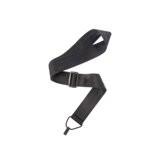
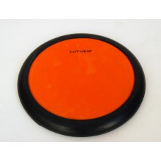

Медиатор Alice от 0.50мм до 1.70мм
200-300 kzt
Meдиатор Dunlop от 0.50мм до 1.70мм
250-350 kzt

Медиаторы BOSS от 0.50мм до 1.70мм
400-500 kzt

Медиаторы Neflyx от 0.50мм до 1.70мм
400-500 kzt

A007D/BK-A Каподастр для акустической гитары Alice
2800 kzt

JCP-03-BK Каподастр, черный, Joyo
3500 kzt

JCP-03-SL Каподастр, серебристый, Joyo
5000 kzt

996F Ultra Каподастр для фолк-гитары, карбон, Wittner
10 000 kzt

Ремень для гитары PLANET WAVES PWS100 (ЧЕРНЫЙ,КРАСНЫЙ,СИНИЙ,
КОРИЧНЕВЫЙ,ЖЕЛТЫЙ)
3 048 kzt

Ремень для гитары PLANET WAVES 50G00 (ЧЕРНЫЙ,КРАСНЫЙ,СИНИЙ,
КОРИЧНЕВЫЙ,ЖЕЛТЫЙ)
3566 kzt

Ремень для гитары CASCHA HH 2201 (ЧЕРНЫЙ,КРАСНЫЙ,КОРИЧНЕВЫЙ)
3868 kzt

Ремень для гитары PLANET WAVES PWSPA200 ЧЕРНЫЙ,КРАСНЫЙ,КОРИЧНЕВЫЙ)
4331 kzt

7KLHB5A 5A Барабанные палочки, граб, деревянный наконечник, Kaledin Drumsticks
4 500 kzt
7KLHB5A 5A Барабанные палочки, граб, деревянный наконечник, Kaledin Drumsticks
4 500 kzt

7KLHB5A 5A Барабанные палочки, граб, деревянный наконечник, Kaledin Drumsticks
4 500 kzt

7KLHB5A 5A Барабанные палочки, граб, деревянный наконечник, Kaledin Drumsticks
4 500 kzt

7KLHB5A 5A Барабанные палочки, граб, деревянный наконечник, Kaledin Drumsticks
4 500 kzt

7KLHB5A 5A Барабанные палочки, граб, деревянный наконечник, Kaledin Drumsticks
4 500 kzt
7KLHB5A 5A Барабанные палочки, граб, деревянный наконечник, Kaledin Drumsticks
4 500 kzt

7KLHB5A 5A Барабанные палочки, граб, деревянный наконечник, Kaledin Drumsticks
4 500 kzt